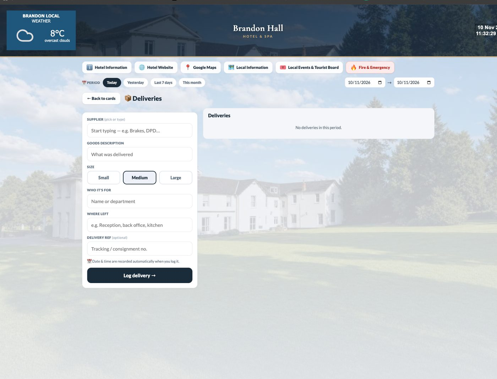

9 · Technical architecture
What exists today: the code, how it is built, and the practices behind it
A plain account of the current codebase for a partner's engineers. It is deliberately simple, works every day in two hotels, and was built for speed of change rather than scale. Its strengths and its limits are both listed.
Screens from the live system
HosDESK at Brandon Hall — the reception board and two of its cards, as used today. Click to enlarge.



Stack as it stands
| Layer | What we use |
|---|---|
| Front end | Hand-written HTML/CSS/JS — no framework; one shell (`app.html`) with per-department modules (`app/core.js`, `mod-house.js`, `mod-fix.js`, `mod-rec.js`, `mod-fb.js`, `mod-sales.js`, `mod-misc.js`, `mod-manage.js`); desktop portal (`index.html`, `app.js`, `data.js`) |
| Install & offline | PWA: manifests per department, network-first service worker, add-to-home-screen icons; installed in under a minute, no app store |
| Database | Google Cloud Firestore (document DB) via the Firebase compat SDK; real-time listeners; per-document sync; collections per module (see the data model page) |
| Server logic | Firebase Cloud Functions Gen 2 (europe-west1): `register` and `notify` for push (FCM); WhatsApp template fallback. Everything else runs client-side against Firestore rules |
| Hosting | GitHub Pages per property sub-domain (`brandon.hospro.co.uk`, `thebarnhotel.hospro.co.uk`); one e2-micro Google Cloud VM as the guest Wi-Fi relay |
| Integrations | Guestline (forecast export now; API agreed); UniFi hotspot API; Xero imports; rate-shopper and Mailchimp connecting; Playwright-rendered branded PDFs |
| Access | App-level login (department → name → PIN), roles in `meta/access_config` and `hospro_app/users`; Firestore rules per collection (open for shared operational collections today) |
| Second property | Same project, prefixed collections (`barn_*`), per-hotel config file (rooms, areas, teams, thresholds, branding); cloned and branded in a day |
Practices we hold to
- Add, never break. New modules sit beside working ones; old apps stay as fallbacks until the new one is proven (HosFIX standalone is still there behind the one-app version).
- Change files, not folders. Only the files that changed are uploaded; two people never deploy from different local copies (we learned this the hard way on 1 November).
- Operational data is immutable. Corrections are new records; nothing is deleted in `hosfix_jobs` (rules block deletes).
- Approvals and thresholds live in the data (£50 gate, approvers, default fixers), not in code, so each hotel configures its own.
- Photos compressed on the phone; large media kept out of the job document (`hosfix_photos`) so sync stays fast on hotel Wi-Fi.
- Every change is render-tested (syntax checks and a headless browser run for each role) before it is uploaded.
- Clean-start cut-offs when a module is rebuilt, so history is not polluted by test data.
Honest limits
No real authentication yet (PINs, open rules on shared collections). No automated test suite beyond render checks. No CI/CD, no staging environment, no monitoring beyond Firebase's console. Single Firebase project shared by two hotels. These are exactly the items a partner platform solves first.